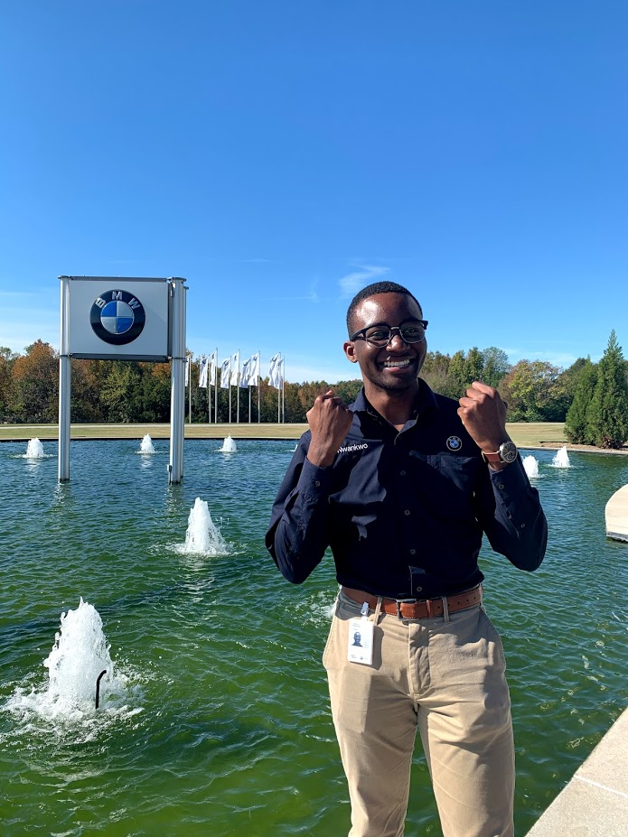

One of the biggest flaws I've been able to improve upon would be my communication skills and its something that each of my work experiences
have helped me develop further. I was able to learn to speak more confidently with knowledge backing it and also being more concise
in all forms of communication. If you would prefer a PDF copy of my resume, feel free to reach out via email and I can send a copy immediately
Student Assistant at Texas Tech University [Nov. 2018 -- Present]
- Served as front line IT help support for student and faculty members
Corrosion Planning Co-op at BMW Manufacturing Co. [Summer 2020]
- Performed periodic testing and analyzed corrosion film build data to ensure BMW Group standards are achieved
- Utilized root cause analysis to solve daily issues relating to production line issues
- Aided in design of increased durability and cost efficiency of production line fixture
New Model Planning Co-op at BMW Manufacturing Co. [Fall 2019]
- Performed and analyzed cycle time data to identify pinch points and areas for work content redistribution
- Coordinated with contractors to develop quotes and verify feasibility of new work deck designs
Irrigation Patroller at City of Frisco Public Works [Summer 2018 & Summer 2019]
- Engaged with and educated citizens on proper outdoor water usage and conservation
- Tracked violations and issues in central water use database
- Worked with citizens and businesses to reduce water waste and streamline current water use